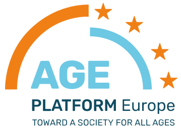

"OSTATNIA WARTA" FOUNDATION
"Stay here and keep watch with me!"
So that no one has to pass away alone.
So that no one has to pass away alone.
Choose what is closest to your heart:
Get to know Ostatnia Warta.
Who we are and why the Foundation was created. Discover our history and the true meaning of what we do.

Membership in the most prestigious expert network in Europe confirms the highest quality of our activities. Together with EU partners, we directly shape and implement modern standards of long-term care.

As part of the IVY 2026 celebrations, we have received the patronage of the Director of NIW-CRSO for the innovative training of our volunteers for the noble service of end-of-life doula within the "Gdańsk School of Accompanying" project.
Thanks to our involvement in grant programs, we are constantly developing our competencies, and the institutional patronages we have received are an honor for us and proof that our mission is of great social importance.
Discover our initiatives →Those who are already with us.
Meet the institutions, organizations, and companies we cooperate with, and those who support the development of our mission on a daily basis.
We accompany, support, and help where a human being needs another human being the most: in illness, loneliness, old age, and at the end of life. Our actions combine presence, material aid, family support, and social education.
The noble service of accompanying people in the process of passing away. We care for a space free from fear, saturated with peace and emotional support.
Meet the End-of-Life Doulas →An educational program of the Ostatnia Warta Foundation dedicated to the art of presence with the sick and dying. We create a space for learning, reflection, and the formation of volunteers who want to accompany others with empathy, peace, and respect for human dignity.
Join the School →The "Ostatnia Warta" Foundation is developing the idea of a Sitting Service in Poland, which means volunteering to be present with the sick and dying.
Discover Sitting Service →A digital archive of 20th-century eyewitnesses. We archive the individual fates and memories of Gdańsk residents, turning them into intergenerational "letters to the future".
Check details →Help for people struggling with severe illness and their loved ones. If you need the presence of a volunteer or support during a difficult time, we invite you to read the rules of care provided by the Foundation.
Documents for Patients →Support for people struggling with severe illness and their loved ones. We help with everyday difficulties, organize material and social aid, and above all, try to ensure that no one is left alone during their illness.
See how we help →A space dedicated to the elderly. We focus on supporting the independence and social integration of seniors. Special attention is paid to wise companionship for people struggling with diseases of old age and dementia.
Discover support for seniors →Learn about the activities of the Ostatnia Warta Foundation for people with disabilities. We accompany, support, and remind everyone that human dignity does not depend on physical ability.
See our actions →The Manifesto of Ostatnia Warta.
A few words about what we believe in. Why presence matters and why no one should pass away alone.
Has the court sentenced you to a limitation of liberty in the form of community service? Fulfill this obligation in a place where your work takes on deep meaning. Help us with organizational and logistical activities.
Check the rules →
We exist to accompany, support, and bring dignity where loneliness, illness, and the end of life appear. Everyone can help in a different way: you can be with another person, support the foundation's activities, or help us develop the idea.
See how you can support our mission and learn more about certificates for the court.
Our mission depends on people like you. Help us keep the Last Watch.
Join our Watch →Build a socially responsible image for your company. We invite enterprises that want to have a real impact on the fate of lonely and terminally ill people to cooperate with us. Together we can create something great.
See the offer for companies →Have you found yourself in a difficult legal situation? Show the court your pro-social attitude and willingness to make amends. Support our mission and get an official donation certificate for the case files (pursuant to Art. 53 § 2 of the Polish Penal Code).
Learn more →We are looking for people ready to "stand watch" by another human being. We do not require medical education — empathy, responsibility, and readiness to be present with the sick are the most important.
Join the Volunteering →